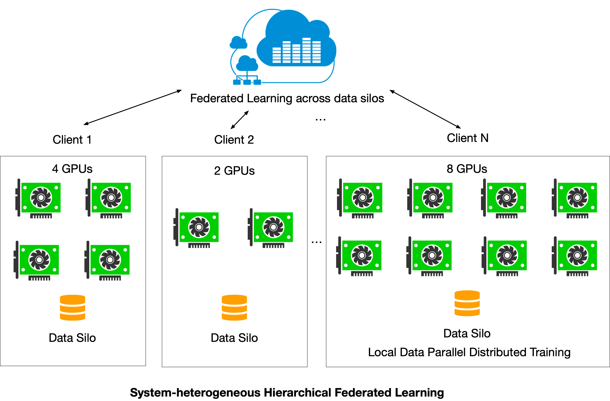
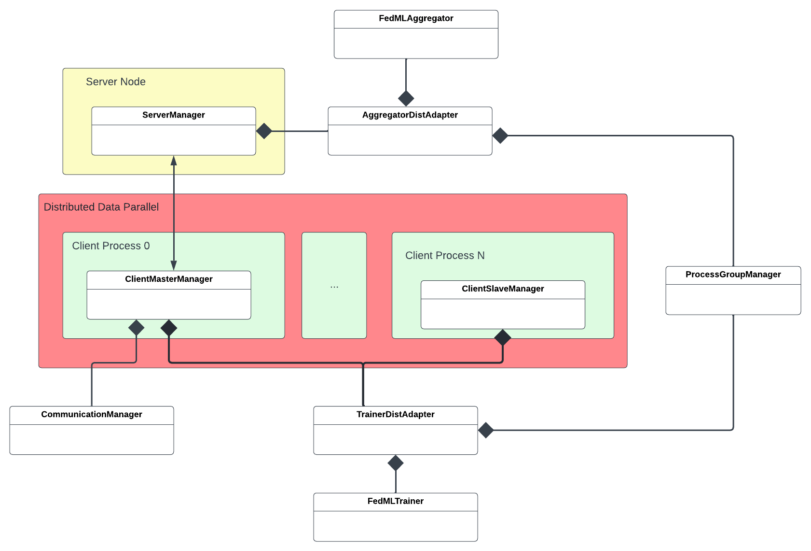

FedML Octopus - Heterogeneous Hierarchical Federated Learning¶
This example illustrates how to do real-world hierarchical cross-silo federated learning with FedML Octopus. Hierarchical architecture allows a silo/client to take adavantage of multiple GPUs on different nodes to further accelerate training process. We use PyTorch’s Distributed Data Parallel (DDP) to achieve this goal.
The example provided here demonstrates a scenario where there are two silos/clients, and each of them has access to multiple GPUs. Silo-1 trains the model on 2 nodes, with each node having 1 GPU, while Silo-2 trains its model using 1 GPU on a single node. The source code locates at python/examples/cross_silo/mqtt_s3_fedavg_hierarchical_mnist_lr_example.
If you have multiple nodes, you should run the client script on each node
One line API¶
python/examples/cross_silo/mqtt_s3_fedavg_hierarchical_mnist_lr_example/one_line
The highly encapsulated server and client API calls are shown as below:
run_server.sh is as follows:
#!/usr/bin/env bash
python3 server/torch_server.py --cf config/fedml_config.yaml --rank 0
server/torch_server.py
import fedml
if __name__ == "__main__":
fedml.run_hierarchical_cross_silo_server()
run_client.sh
#!/usr/bin/env bash
RANK=$1
python3 client_dist_launcher.py --cf config/fedml_config.yaml --rank $RANK
client/torch_client.py
import fedml
if __name__ == "__main__":
fedml.run_hierarchical_cross_silo_client()
At the client side, the client ID (a.k.a rank) starts from 1.
At the server side, run the following script:
bash run_server.sh
For Silo/Client 1, run the following script on first node:
bash run_client.sh 1
For Silo/Client 2, run the following script:
bash run_client.sh 2
Note: please run the server first. Note:
config/fedml_config.yaml is shown below.
Here common_args.training_type is “cross_silo” type,common_args.scenario is hierarchical, and train_args.client_id_list needs to correspond to the client id in the client command line. Aslo, private_config_paths paths to configs specific to server or different silos. In this example, we have specified the configs paths for the server and two silos.
common_args:
training_type: "cross_silo"
scenario: "hierarchical"
using_mlops: false
random_seed: 0
environment_args:
bootstrap: config/bootstrap.sh
data_args:
dataset: "mnist"
data_cache_dir: "./../../../../data/MNIST"
partition_method: "hetero"
partition_alpha: 0.5
model_args:
model: "lr"
model_file_cache_folder: "./model_file_cache" # will be filled by the server automatically
global_model_file_path: "./model_file_cache/global_model.pt"
train_args:
federated_optimizer: "FedAvg"
client_id_list: "[1, 2]"
client_num_in_total: 2
client_num_per_round: 2
comm_round: 50
epochs: 1
batch_size: 10
client_optimizer: sgd
learning_rate: 0.001
weight_decay: 0.001
validation_args:
frequency_of_the_test: 5
device_args:
using_gpu: true
gpu_mapping_file: config/gpu_mapping.yaml
server_gpu_mapping_key: mapping_default
comm_args:
backend: "MQTT_S3"
mqtt_config_path: config/mqtt_config.yaml
s3_config_path: config/s3_config.yaml
tracking_args:
log_file_dir: ./log
local_log_output_path: ./log
enable_wandb: false
wandb_key: ee0b5f53d949c84cee7decbe7a619e63fb1f8408
wandb_project: fedml
wandb_name: fedml_torch_fedavg_mnist_lr
private_config_paths:
server_config_path: config/server.yaml
client_silo_config_paths: [
config/silo_1.yaml,
config/silo_2.yaml
]
For this example we use the following as config/server.yaml, config/silo-1.yaml and config/silo-2.yaml respectively.
# config/server.yaml
device_args:
using_gpu: true
gpu_mapping_file: config/gpu_mapping.yaml
gpu_mapping_key: mapping_server
# config/silo-2.yaml
dist_training_args:
n_node_in_silo: 2
n_proc_per_node: 2
node_addresses: [192.168.1.1, 192.168.1.2]
master_address: '192.168.1.1'
launcher_rdzv_port: 29410
device_args:
using_gpu: true
gpu_mapping_file: config/gpu_mapping.yaml
gpu_mapping_key: mapping_silo_1
# config/silo-2.yaml
dist_training_args:
n_node_in_silo: 2
n_proc_per_node: 1
node_addresses: [192.168.1.3]
master_address: '192.168.1.3'
launcher_rdzv_port: 29410
device_args:
using_gpu: true
gpu_mapping_file: config/gpu_mapping.yaml
gpu_mapping_key: mapping_silo_2
Here dist_training_args defines the distributed training hierarchy for each silo where:
n_node_in_silois number of nodes in silon_proc_per_nodeis number of processes (distributed trainers) in each node.master_addressis ip address of the process group master. This should be the ip of the first node in node_addresses.node_addressesis addresses of the nodes inside silo.launcher_rdzv_portis port of on the process group master which is used for rendezvous.
Please note in order to run distributed training:
You need to have
pdshandfedmlinstalled on all nodes in silo.Python executable path should be same for all nodes in silo.
The first node in
dist_training_args.node_addressesshould be the same as master_address.The node executing
run_client.shshould have passwrodless ssh access to the nodes indist_training_args.node_addresses.All of the nodes in
dist_training_args.node_addressesshould be able to accessdist_training_args.master_addressthroughNETWORK_INTERFACEdefined inrun_client.sh. You can use theifconfigcommand to get a list of available interfaces and their ip addresses.
Furthermore, device_args in each of the config files defines the device configs for the corresponding server/silo. In this example, as presented by config/silo-2.yaml, Silo 1 has 2 nodes with 1 processes on each. Therefore, Silo 1 has 2 processes in total. To match this setting, mapping_silo_1 defined in config/gpu_mapping.yaml should contain 2 nodes with 1 workers each.
Training Results¶
At the end of the 50th training round, the server window will see the following output:
[FedML-Server(0) @device-id-0] [Fri, 20 May 2022 04:07:15] [INFO] [fedml_aggregator.py:197:test_on_server_for_all_clients] ################test_on_server_for_all_clients : 49
[FedML-Server(0) @device-id-0] [Fri, 20 May 2022 04:07:15] [INFO] [fedml_aggregator.py:224:test_on_server_for_all_clients] {'training_acc': 0.37611896730669436, 'training_loss': 2.1912692754254417}
[FedML-Server(0) @device-id-0] [Fri, 20 May 2022 04:07:15] [INFO] [fedml_server_manager.py:165:handle_message_receive_model_from_client] aggregator_dist_adapter.aggregator.test exception: 'NoneType' object has no attribute 'report_server_training_metric'
[FedML-Server(0) @device-id-0] [Fri, 20 May 2022 04:07:15] [INFO] [fedml_aggregator.py:116:data_silo_selection] client_num_in_total = 1000, client_num_per_round = 2
[FedML-Server(0) @device-id-0] [Fri, 20 May 2022 04:07:15] [INFO] [fedml_server_manager.py:235:send_message_sync_model_to_client] send_message_sync_model_to_client. receive_id = 1
[FedML-Server(0) @device-id-0] [Fri, 20 May 2022 04:07:15] [INFO] [mqtt_s3_multi_clients_comm_manager.py:244:send_message] mqtt_s3.send_message: starting...
[FedML-Server(0) @device-id-0] [Fri, 20 May 2022 04:07:15] [INFO] [mqtt_s3_multi_clients_comm_manager.py:250:send_message] mqtt_s3.send_message: msg topic = fedml_0_0_1
[FedML-Server(0) @device-id-0] [Fri, 20 May 2022 04:07:15] [INFO] [mqtt_s3_multi_clients_comm_manager.py:257:send_message] mqtt_s3.send_message: S3+MQTT msg sent, s3 message key = fedml_0_0_1_eecbc3ba-1ba9-4b6d-b6c6-ca9194865e31
[FedML-Server(0) @device-id-0] [Fri, 20 May 2022 04:07:15] [INFO] [mqtt_s3_multi_clients_comm_manager.py:269:send_message] mqtt_s3.send_message: to python client.
[FedML-Server(0) @device-id-0] [Fri, 20 May 2022 04:07:16] [INFO] [fedml_server_manager.py:235:send_message_sync_model_to_client] send_message_sync_model_to_client. receive_id = 2
[FedML-Server(0) @device-id-0] [Fri, 20 May 2022 04:07:16] [INFO] [mqtt_s3_multi_clients_comm_manager.py:244:send_message] mqtt_s3.send_message: starting...
[FedML-Server(0) @device-id-0] [Fri, 20 May 2022 04:07:16] [INFO] [mqtt_s3_multi_clients_comm_manager.py:250:send_message] mqtt_s3.send_message: msg topic = fedml_0_0_2
[FedML-Server(0) @device-id-0] [Fri, 20 May 2022 04:07:16] [INFO] [mqtt_s3_multi_clients_comm_manager.py:257:send_message] mqtt_s3.send_message: S3+MQTT msg sent, s3 message key = fedml_0_0_2_8792eda0-6be8-424e-9c71-e2b49004db48
[FedML-Server(0) @device-id-0] [Fri, 20 May 2022 04:07:16] [INFO] [mqtt_s3_multi_clients_comm_manager.py:269:send_message] mqtt_s3.send_message: to python client.
[FedML-Server(0) @device-id-0] [Fri, 20 May 2022 04:07:16] [INFO] [server_manager.py:124:finish] __finish server
[FedML-Server(0) @device-id-0] [Fri, 20 May 2022 04:07:16] [INFO] [mqtt_s3_multi_clients_comm_manager.py:337:stop_receive_message] mqtt_s3.stop_receive_message: stopping...
[FedML-Server(0) @device-id-0] [Fri, 20 May 2022 04:07:16] [INFO] [mqtt_s3_multi_clients_comm_manager.py:160:_on_disconnect] mqtt_s3.on_disconnect: disconnection returned result 0, user data None
[FedML-Server(0) @device-id-0] [Fri, 20 May 2022 04:07:16] [INFO] [server_manager.py:94:run] running
[FedML-Server(0) @device-id-0] [Fri, 20 May 2022 04:07:16] [INFO] [mqtt_s3_status_manager.py:80:_on_disconnect] mqtt_s3.on_disconnect: disconnection returned result 0, user data None
At the end of the 50th training round, client1 window will see the following output:
172.31.25.57: [FedML-Client(1) @device-id-1] [Fri, 20 May 2022 04:07:15] [INFO] [client_master_manager.py:155:handle_message_receive_model_from_server] #######training########### round_id = 49
172.31.28.254: [FedML-Client(1) @device-id-1] [Fri, 20 May 2022 04:07:15] [INFO] [client_slave_manager.py:47:await_sync_process_group] prcoess 1 received round_number 48
172.31.25.57: [FedML-Client(1) @device-id-1] [Fri, 20 May 2022 04:07:15] [INFO] [my_model_trainer_classification.py:44:train] Update Epoch: 0 [10/20 (50%)] Loss: 2.306870
172.31.28.254: [FedML-Client(1) @device-id-1] [Fri, 20 May 2022 04:07:15] [INFO] [my_model_trainer_classification.py:44:train] Update Epoch: 0 [10/20 (50%)] Loss: 2.276260
172.31.25.57: [FedML-Client(1) @device-id-1] [Fri, 20 May 2022 04:07:15] [INFO] [my_model_trainer_classification.py:44:train] Update Epoch: 0 [20/20 (100%)] Loss: 2.263015
172.31.25.57: [FedML-Client(1) @device-id-1] [Fri, 20 May 2022 04:07:15] [INFO] [my_model_trainer_classification.py:55:train] Client Index = 0 Epoch: 0 Loss: 2.284942
172.31.25.57: [FedML-Client(1) @device-id-1] [Fri, 20 May 2022 04:07:15] [INFO] [client_manager.py:115:send_message] Sending message (type 3) to server
172.31.25.57: [FedML-Client(1) @device-id-1] [Fri, 20 May 2022 04:07:15] [INFO] [mqtt_s3_multi_clients_comm_manager.py:244:send_message] mqtt_s3.send_message: starting...
172.31.25.57: [FedML-Client(1) @device-id-1] [Fri, 20 May 2022 04:07:15] [INFO] [mqtt_s3_multi_clients_comm_manager.py:308:send_message] mqtt_s3.send_message: to python client.
172.31.28.254: [FedML-Client(1) @device-id-1] [Fri, 20 May 2022 04:07:15] [INFO] [my_model_trainer_classification.py:44:train] Update Epoch: 0 [20/20 (100%)] Loss: 2.301717
172.31.28.254: [FedML-Client(1) @device-id-1] [Fri, 20 May 2022 04:07:15] [INFO] [my_model_trainer_classification.py:55:train] Client Index = 0 Epoch: 0 Loss: 2.288988
172.31.28.254: [FedML-Client(1) @device-id-1] [Fri, 20 May 2022 04:07:15] [INFO] [client_slave_manager.py:40:await_sync_process_group] prcoess 1 waiting for round number
172.31.25.57: [FedML-Client(1) @device-id-1] [Fri, 20 May 2022 04:07:16] [INFO] [mqtt_s3_multi_clients_comm_manager.py:191:_on_message_impl] --------------------------
172.31.25.57: [FedML-Client(1) @device-id-1] [Fri, 20 May 2022 04:07:16] [INFO] [mqtt_s3_multi_clients_comm_manager.py:204:_on_message_impl] mqtt_s3.on_message: use s3 pack, s3 message key fedml_0_0_1_eecbc3ba-1ba9-4b6d-b6c6-ca9194865e31
172.31.25.57: [FedML-Client(1) @device-id-1] [Fri, 20 May 2022 04:07:16] [INFO] [mqtt_s3_multi_clients_comm_manager.py:212:_on_message_impl] mqtt_s3.on_message: from python client.
172.31.25.57: [FedML-Client(1) @device-id-1] [Fri, 20 May 2022 04:07:16] [INFO] [mqtt_s3_multi_clients_comm_manager.py:215:_on_message_impl] mqtt_s3.on_message: model params length 2
172.31.25.57: [FedML-Client(1) @device-id-1] [Fri, 20 May 2022 04:07:16] [INFO] [mqtt_s3_multi_clients_comm_manager.py:186:_notify] mqtt_s3.notify: msg type = 2
172.31.25.57: [FedML-Client(1) @device-id-1] [Fri, 20 May 2022 04:07:16] [INFO] [client_master_manager.py:132:handle_message_receive_model_from_server] handle_message_receive_model_from_server.
172.31.25.57: [FedML-Client(1) @device-id-1] [Fri, 20 May 2022 04:07:16] [INFO] [client_master_manager.py:246:sync_process_group] sending round number to pg
172.31.25.57: [FedML-Client(1) @device-id-1] [Fri, 20 May 2022 04:07:16] [INFO] [client_master_manager.py:253:sync_process_group] round number 49 broadcasted to process group
172.31.25.57: [FedML-Client(1) @device-id-1] [Fri, 20 May 2022 04:07:16] [INFO] [client_master_manager.py:164:finish] Training finished for master client rank 0 in silo 0
172.31.28.254: [FedML-Client(1) @device-id-1] [Fri, 20 May 2022 04:07:16] [INFO] [client_slave_manager.py:47:await_sync_process_group] prcoess 1 received round_number 49
172.31.28.254: [FedML-Client(1) @device-id-1] [Fri, 20 May 2022 04:07:16] [INFO] [trainer_dist_adapter.py:137:cleanup_pg] Cleaningup process group for client 1 in silo 0
172.31.28.254: [FedML-Client(1) @device-id-1] [Fri, 20 May 2022 04:07:16] [INFO] [client_slave_manager.py:33:finish] Training finsihded for slave client rank 1 in silo 0
172.31.25.57: [FedML-Client(1) @device-id-1] [Fri, 20 May 2022 04:07:16] [INFO] [trainer_dist_adapter.py:137:cleanup_pg] Cleaningup process group for client 0 in silo 0
172.31.25.57: [FedML-Client(1) @device-id-1] [Fri, 20 May 2022 04:07:16] [INFO] [client_manager.py:129:finish] __finish client
172.31.25.57: [FedML-Client(1) @device-id-1] [Fri, 20 May 2022 04:07:16] [INFO] [mqtt_s3_multi_clients_comm_manager.py:337:stop_receive_message] mqtt_s3.stop_receive_message: stopping...
172.31.25.57: [FedML-Client(1) @device-id-1] [Fri, 20 May 2022 04:07:16] [INFO] [mqtt_s3_multi_clients_comm_manager.py:160:_on_disconnect] mqtt_s3.on_disconnect: disconnection returned result 0, user data None
172.31.25.57: [FedML-Client(1) @device-id-1] [Fri, 20 May 2022 04:07:16] [INFO] [client_master_manager.py:261:run] Connection is ready!
172.31.25.57: [FedML-Client(1) @device-id-1] [Fri, 20 May 2022 04:07:16] [INFO] [mqtt_s3_status_manager.py:80:_on_disconnect] mqtt_s3.on_disconnect: disconnection returned result 0, user data None
At the end of the 50th training round, the client2 window will see the following output:
172.31.28.254: [FedML-Client(2) @device-id-1] [Fri, 20 May 2022 04:07:15] [INFO] [client_master_manager.py:155:handle_message_receive_model_from_server] #######training########### round_id = 49
172.31.28.254: [FedML-Client(2) @device-id-1] [Fri, 20 May 2022 04:07:15] [INFO] [my_model_trainer_classification.py:44:train] Update Epoch: 0 [10/40 (25%)] Loss: 2.306870
172.31.28.254: [FedML-Client(2) @device-id-1] [Fri, 20 May 2022 04:07:15] [INFO] [my_model_trainer_classification.py:44:train] Update Epoch: 0 [20/40 (50%)] Loss: 2.263015
172.31.28.254: [FedML-Client(2) @device-id-1] [Fri, 20 May 2022 04:07:15] [INFO] [my_model_trainer_classification.py:44:train] Update Epoch: 0 [30/40 (75%)] Loss: 2.271503
172.31.28.254: [FedML-Client(2) @device-id-1] [Fri, 20 May 2022 04:07:15] [INFO] [my_model_trainer_classification.py:44:train] Update Epoch: 0 [40/40 (100%)] Loss: 2.296894
172.31.28.254: [FedML-Client(2) @device-id-1] [Fri, 20 May 2022 04:07:15] [INFO] [my_model_trainer_classification.py:55:train] Client Index = 1 Epoch: 0 Loss: 2.284570
172.31.28.254: [FedML-Client(2) @device-id-1] [Fri, 20 May 2022 04:07:15] [INFO] [client_manager.py:115:send_message] Sending message (type 3) to server
172.31.28.254: [FedML-Client(2) @device-id-1] [Fri, 20 May 2022 04:07:15] [INFO] [mqtt_s3_multi_clients_comm_manager.py:244:send_message] mqtt_s3.send_message: starting...
172.31.28.254: [FedML-Client(2) @device-id-1] [Fri, 20 May 2022 04:07:15] [INFO] [mqtt_s3_multi_clients_comm_manager.py:296:send_message] mqtt_s3.send_message: S3+MQTT msg sent, message_key = fedml_0_2_565e48cb-d7d0-4d9d-867b-8b7e880db4c5
172.31.28.254: [FedML-Client(2) @device-id-1] [Fri, 20 May 2022 04:07:15] [INFO] [mqtt_s3_multi_clients_comm_manager.py:308:send_message] mqtt_s3.send_message: to python client.
172.31.28.254: [FedML-Client(2) @device-id-1] [Fri, 20 May 2022 04:07:16] [INFO] [mqtt_s3_multi_clients_comm_manager.py:191:_on_message_impl] --------------------------
172.31.28.254: [FedML-Client(2) @device-id-1] [Fri, 20 May 2022 04:07:16] [INFO] [mqtt_s3_multi_clients_comm_manager.py:204:_on_message_impl] mqtt_s3.on_message: use s3 pack, s3 message key fedml_0_0_1_eecbc3ba-1ba9-4b6d-b6c6-ca9194865e31
172.31.28.254: [FedML-Client(2) @device-id-1] [Fri, 20 May 2022 04:07:16] [INFO] [mqtt_s3_multi_clients_comm_manager.py:212:_on_message_impl] mqtt_s3.on_message: from python client.
172.31.28.254: [FedML-Client(2) @device-id-1] [Fri, 20 May 2022 04:07:16] [INFO] [mqtt_s3_multi_clients_comm_manager.py:215:_on_message_impl] mqtt_s3.on_message: model params length 2
172.31.28.254: [FedML-Client(2) @device-id-1] [Fri, 20 May 2022 04:07:16] [INFO] [mqtt_s3_multi_clients_comm_manager.py:186:_notify] mqtt_s3.notify: msg type = 2
172.31.28.254: [FedML-Client(2) @device-id-1] [Fri, 20 May 2022 04:07:16] [INFO] [client_master_manager.py:132:handle_message_receive_model_from_server] handle_message_receive_model_from_server.
172.31.28.254: [FedML-Client(2) @device-id-1] [Fri, 20 May 2022 04:07:16] [INFO] [client_master_manager.py:246:sync_process_group] sending round number to pg
172.31.28.254: [FedML-Client(2) @device-id-1] [Fri, 20 May 2022 04:07:16] [INFO] [client_master_manager.py:253:sync_process_group] round number 49 broadcasted to process group
172.31.28.254: [FedML-Client(2) @device-id-1] [Fri, 20 May 2022 04:07:16] [INFO] [client_master_manager.py:164:finish] Training finished for master client rank 0 in silo 0
172.31.28.254: [FedML-Client(2) @device-id-1] [Fri, 20 May 2022 04:07:16] [INFO] [trainer_dist_adapter.py:137:cleanup_pg] Cleaningup process group for client 0 in silo 0
172.31.28.254: [FedML-Client(2) @device-id-1] [Fri, 20 May 2022 04:07:16] [INFO] [client_manager.py:129:finish] __finish client
172.31.28.254: [FedML-Client(2) @device-id-1] [Fri, 20 May 2022 04:07:16] [INFO] [mqtt_s3_multi_clients_comm_manager.py:337:stop_receive_message] mqtt_s3.stop_receive_message: stopping...
172.31.28.254: [FedML-Client(2) @device-id-1] [Fri, 20 May 2022 04:07:16] [INFO] [mqtt_s3_multi_clients_comm_manager.py:160:_on_disconnect] mqtt_s3.on_disconnect: disconnection returned result 0, user data None
172.31.28.254: [FedML-Client(2) @device-id-1] [Fri, 20 May 2022 04:07:16] [INFO] [client_master_manager.py:261:run] Connection is ready!
172.31.28.254: [FedML-Client(2) @device-id-1] [Fri, 20 May 2022 04:07:16] [INFO] [mqtt_s3_status_manager.py:80:_on_disconnect] mqtt_s3.on_disconnect: disconnection returned result 0, user data None
Five lines of APIs¶
torch_client.py
import fedml
from fedml.cross_silo.hierarchical import Client
if __name__ == "__main__":
# init FedML framework
args = fedml.init()
device = fedml.device.get_device(args)
# load data
dataset, output_dim = fedml.data.load_cross_silo(args)
# load model
model = fedml.model.create(args, output_dim)
# start training
client = Client(args, device, dataset, model)
client.run()
Custom data and model¶
The custom data and model example locates at the following folder:
python/examples/cross_silo/mqtt_s3_fedavg_hierarchical_mnist_lr_example/custum_data_and_model
def load_data(args):
n_dist_trainer = args.n_proc_in_silo
download_mnist(args.data_cache_dir)
fedml.logger.info("load_data. dataset_name = %s" % args.dataset)
"""
Please read through the data loader at to see how to customize the dataset for FedML framework.
"""
(
client_num,
train_data_num,
test_data_num,
train_data_global,
test_data_global,
train_data_local_num_dict,
train_data_local_dict,
test_data_local_dict,
class_num,
) = load_partition_data_mnist(
args.batch_size,
train_path=args.data_cache_dir + "MNIST/train",
test_path=args.data_cache_dir + "MNIST/test",
)
"""
For shallow NN or linear models,
we uniformly sample a fraction of clients each round (as the original FedAvg paper)
"""
args.client_num_in_total = client_num
dataset = [
train_data_num,
test_data_num,
train_data_global,
test_data_global,
train_data_local_num_dict,
train_data_local_dict,
test_data_local_dict,
class_num,
]
# Split training data between distributed trainers
train_data_local_dict = split_data_for_dist_trainers(train_data_local_dict, n_dist_trainer)
dataset = [
train_data_num,
test_data_num,
train_data_global,
test_data_global,
train_data_local_num_dict,
train_data_local_dict,
test_data_local_dict,
class_num,
]
return dataset, class_num
class LogisticRegression(torch.nn.Module):
def __init__(self, input_dim, output_dim):
super(LogisticRegression, self).__init__()
self.linear = torch.nn.Linear(input_dim, output_dim)
def forward(self, x):
outputs = torch.sigmoid(self.linear(x))
return outputs
if __name__ == "__main__":
# init FedML framework
args = fedml.init()
# init device
device = fedml.device.get_device(args)
# load data
dataset, output_dim = load_data(args)
# load model (the size of MNIST image is 28 x 28)
model = LogisticRegression(28 * 28, output_dim)
# start training
client = Client(args, device, dataset, model)
client.run()
Source code architecture¶

A Better User-experience with FedML MLOps (open.fedml.ai)¶
To reduce the difficulty and complexity of these CLI commands. We recommend you to use our MLOps (open.fedml.ai). FedML MLOps provides:
Install Client Agent and Login
Inviting Collaborators and group management
Project Management
Experiment Tracking (visualizing training results)
monitoring device status
visualizing system performance (including profiling flow chart)
distributed logging
model serving
For more details, please refer to MLOps User Guide.